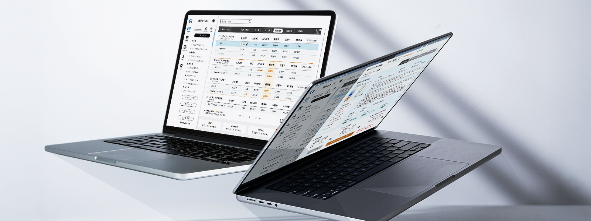
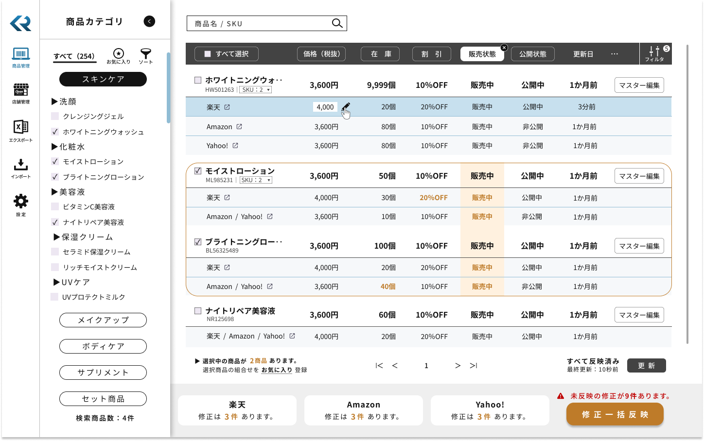
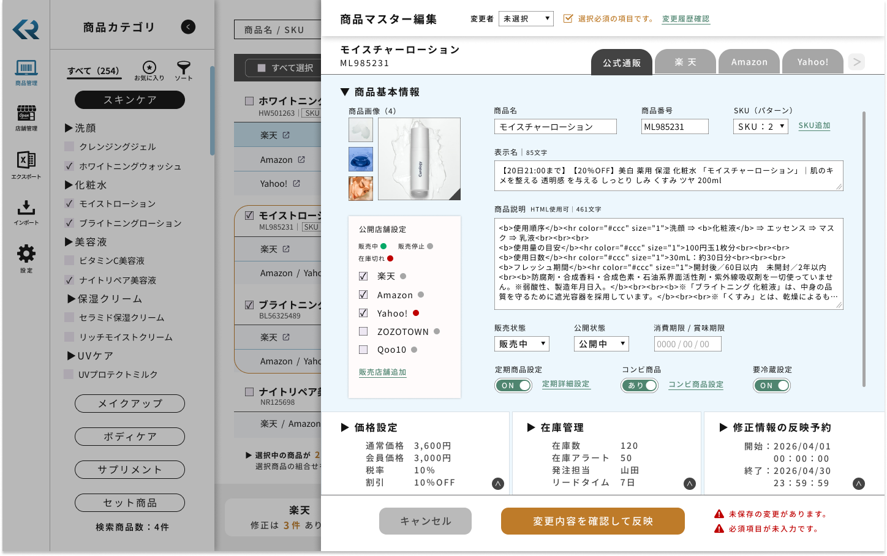
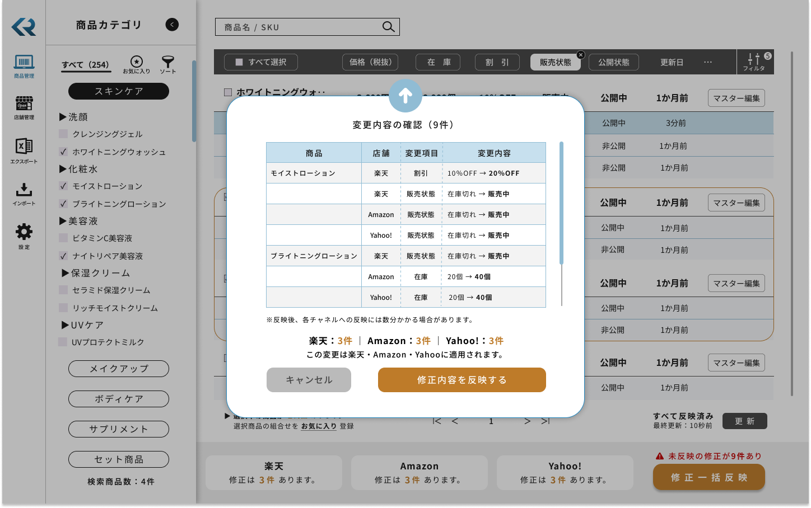
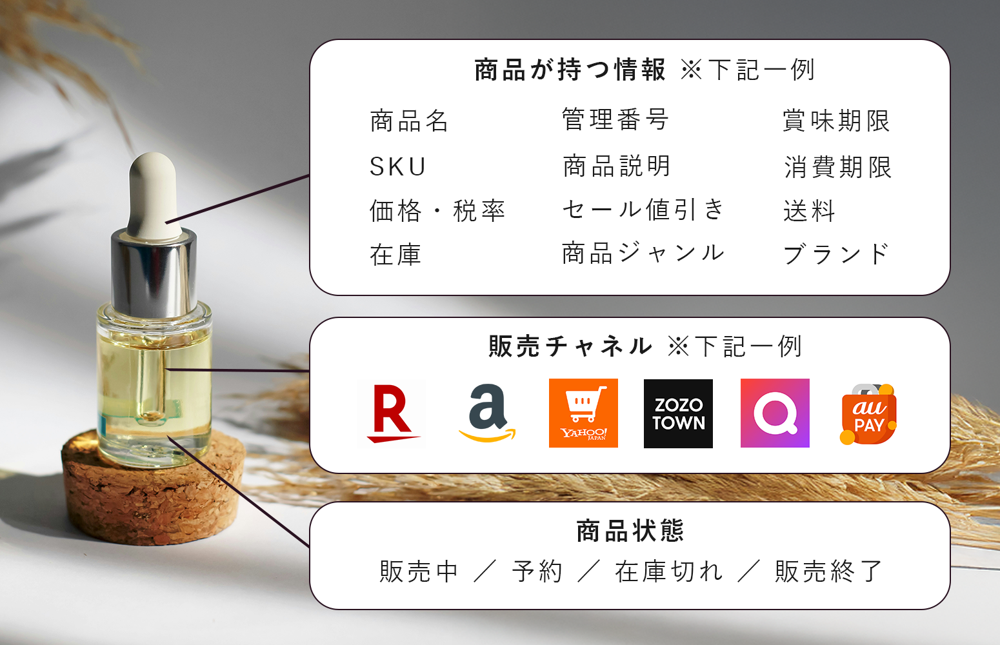

■ 商品変更のたびに、各チャネルで同じ作業を繰り返す必要があった
多店舗EC運用では、自社EC・楽天・Amazon・Yahooなど複数チャネルで販売することが多い。 しかし価格変更、商品説明変更、画像差し替え、在庫変更、販売終了、商品パターン追加などが発生するたびに、 各店舗管理画面で同様の更新作業を繰り返す必要があり、運用担当者の大きな負担になっていた。
02. CASE STUDY

概要
SaaSプロダクトのWEBアプリケーションを想定し、公式サイト・モール展開などの多店舗経営をモデルとした商品一元管理のケーススタディ。
商品情報を修正する際、多店舗経営をしていると店舗単位で作業が繰り返し発生することに注目し、店舗単位ではなく商品単位で一元管理するプロダクトを企画。
複雑な商品情報を、ユーザーが日常的に使いやすいように整理し、操作性と安全性の両立を目指しUX/UI設計を行った自主制作である。
自社ECとモールを横断して商品管理を行うEC運用担当者を主対象とした。 少人数運用（1〜3名）で、各チャネル専任が明確に分かれておらず、 商品登録・価格変更・SKU管理・在庫管理・販売チャネル管理などを並行して担う現場を想定している。
商品情報が店舗ごとに分断されているため、 商品変更のたびに各管理画面で同様の更新作業を繰り返す必要がある。 その結果、更新漏れや価格不一致が発生しやすく、 変更反映前の確認にも心理的な負荷がかかる状態だった。
商品情報を店舗単位ではなく商品単位で管理できるようにし、 複数チャネルにまたがる更新作業の負担を減らすこと。 あわせて、変更の影響範囲や未反映状態を見える化し、 スピードと安全性の両立を目指した。
対象は、商品情報 / SKU / 在庫 / 販売チャネル同期 / 商品変更履歴管理。 一方で、受注管理 / 発送管理 / 顧客管理 / 売上分析 / 権限管理は対象外とし、 小規模〜中規模EC事業者が扱いやすい範囲に絞って設計した。
実務で感じていた運用課題を起点に、 「何の機能を増やすか」ではなく「何を中心に情報を持つべきか」から再設計した。 UIの見た目だけではなく、対象ユーザー、情報構造、操作導線、対象外スコープまで含めて プロダクトとして成立する骨格を考えている。 本プロダクトでは、課題整理・情報設計・UI設計まで一貫して担当した。
02. PROBLEM
多店舗EC運用では、自社EC・楽天・Amazon・Yahooなど複数チャネルで販売することが多い。 しかし価格変更、商品説明変更、画像差し替え、在庫変更、販売終了、商品パターン追加などが発生するたびに、 各店舗管理画面で同様の更新作業を繰り返す必要があり、運用担当者の大きな負担になっていた。
既存のEC管理画面は、楽天管理、Amazon管理、自社EC管理といった店舗単位の構造が多い。 ただ実際の運用者は「この商品をどう管理するか」を基準に考えるため、 操作対象と思考対象が一致せず、画面遷移や確認負荷が大きくなりやすい状態だった。
複数チャネルへ同じ変更を反映する運用では、価格不一致、更新漏れ、情報差異といった小さなズレが発生しやすい。 これらは現場の確認コストを増やすだけでなく、販売機会損失や顧客体験の低下にもつながりうる。
想定ユーザーは1〜3名規模の運用であり、厳密な権限管理を先に作り込むよりも、 誰が何を変更したかを履歴で追える状態の方が現実的だと判断した。 そのため、対象範囲を絞りながら、成立するプロダクトにする必要があった。
03. THE INSIGHT
「店舗ごとの操作」ではなく、
「商品をどう管理するか」を中心に構造を組み直す。
問題は単に作業量が多いことだけではなく、運用者の思考と管理画面の構造がずれていたことだった。 そのため、操作を少し便利にするのではなく、まず主オブジェクトを「商品」として再定義し、情報の持ち方から見直す必要があると判断した。
04. STRATEGIC DECISION
01. PROJECT START
商品変更は日常的に発生する一方で、各チャネルの管理画面で同じような作業を繰り返す必要がある。 まずはこの負担を、単発の改善ではなく、構造的な問題として捉え直した。
02. REFRAMING THE ISSUE
店舗単位で管理する既存構造は、運用者の思考と一致していない。 そのため、「どの店舗を触るか」ではなく「どの商品をどう管理するか」を中心に据えるOOUIの考え方を採用した。
03. DECISION MAKING
04. REASONING
この自主制作では、商品情報 / SKU / 在庫 / 販売チャネル同期 / 商品変更履歴管理に絞り、 受注管理や顧客管理などは対象外とした。 これは、プロダクトの焦点を明確にし、実務で最も負荷の高い領域に対して解像度高く向き合うためである。
また、権限管理もあえて持たず、 小規模〜中規模EC事業者の少人数運用を前提に、変更履歴による管理を採用した。 理想的な多機能化よりも、実際に使える現実性を優先している。
05. FINAL DECISION
05. DESIGN STRUCTURE
本プロダクトでは、主オブジェクトを「商品」とし、 商品が持つ情報、販売チャネル、商品状態、主要機能、変更履歴を整理した。 これにより、店舗ごとではなく商品ごとに状態を把握しながら更新できる構造を目指している。
商品一覧では、各チャネルの価格・在庫・販売状態を横断的に確認できるようにし、 従来の「店舗ごとに画面を行き来する」負担を減らすことを意図した。 商品単位での管理において、最も頻度が高く、判断の起点となるのが一覧画面であるため、 一覧をプロダクトの中心に据えている。
一方で、編集では詳細な商品情報やチャネル差分を整理できるようにし、 一覧の文脈を保ったまま深く編集へ入れる構造にした。 さらに、反映前には確認モーダルを挟み、反映対象チャネルと変更内容を可視化することで、 一括更新時の不安やミスを減らせるようにしている。
06. UI DESIGN
この自主制作では、管理画面らしい見た目を整えることではなく、 「何を一覧で把握し、どこで編集し、どの時点で慎重さを求めるか」を整理することを重視した。 特に複数チャネルへの反映は、効率と安全性の両方が求められる領域として扱っている。
商品一覧では、価格・在庫・販売状態など、よく使う項目をその場で確認・編集できる構成とした。 商品単位で管理することで、チャネルごとの画面遷移を減らし、日常的な更新作業の効率化を目指している。
商品編集は右スライドイン形式を採用し、 一覧の文脈を維持したまま詳細編集へ入れるようにした。 これにより、複数商品の比較や修正を途切れさせずに行える構造にしている。
各チャネルごとの差分を確認しつつ編集できることで、 更新漏れや設定ミスを防ぎながら安全に変更を進められるようにした。 一元管理でありながら、チャネル差異を見失わないことを重視している。
変更内容は即時反映せず、事前確認のフローを採用した。 反映対象チャネルと変更内容を可視化することで、 誤操作リスクと心理的不安を軽減し、安全な一括反映を支えている。
一覧画面で操作を完結できる構成も検討したが、本設計ではあえて編集操作の一部を制限している。
特に複数チャネルへ影響が及ぶ変更については、誤操作のリスクを考慮し、詳細編集画面および確認フローを経由する構造とした。
操作性だけでなく、「どの操作をどこで行うべきか」を整理することで、安全に運用できる体験を重視している。
変更内容は即時反映だけでなく、日時を指定した予約反映にも対応している。
運用のタイミングをコントロールできるようにすることで、業務フローに合わせた更新を可能にした。
また、公開対象の店舗を個別に設定できるようにすることで、チャネルごとの戦略や状況に応じた柔軟な運用を支えている。
権限管理を重く持たない代わりに、変更履歴によって 「何が」「誰によって」「どのように」変わったかを追える設計を採用した。 少人数運用でも管理責任を持ちやすい状態を意識している。
TRADE-OFFS
一覧画面で複製・削除まで完結できれば操作性は上がるが、 複数チャネルへ影響する変更では誤操作リスクも大きくなる。 そのため本設計では、重要な変更は編集画面と確認フローを経由させ、安全性を優先した。
一覧に多くの情報を載せるほど一画面で把握できる情報量は増えるが、 その分、判断のしやすさは下がりやすい。 そのため価格・在庫・販売状態など優先度の高い情報を中心に表示し、 詳細は編集画面側に分ける構造とした。
※画像をクリックすると拡大できます
STEP 01 / KEY SCREEN

商品一覧で全体を横断的に把握し、構造の起点となる画面
STEP 02

文脈を維持したまま詳細編集へ入り、商品単位で情報を整理
STEP 03

変更内容と影響範囲を確認し、安全に各チャネルへ反映
07. PRODUCT SCOPE

この自主制作では、主オブジェクトを商品とし、 商品名、説明、画像、SKU、価格、在庫、販売状態、販売終了日、担当者情報など 商品が持つ情報を整理した。
一方で、受注管理や顧客管理まで広げるのではなく、商品情報の一元管理に焦点を当てた。 これは「大きなプロダクトに見せること」よりも、 何を解決するプロダクトなのかを明確にすることを優先したためである。
また、利用シナリオも 「商品一覧から対象商品を選択 → 商品設定画面で価格変更 → 変更履歴を保存 → 同期チャネルを選択 → 各チャネルへ反映」という流れに整理し、日常業務の中で実際に起きる操作を基準に構成している。
08. EXPECTED IMPACT
本プロダクトでは、商品変更を店舗ごとではなく商品単位で管理することにより、 作業時間削減と運用負担軽減を期待している。 あわせて、商品情報一元管理により、価格不一致、更新漏れ、情報差異といった 運用リスクの低減も目指している。
単に効率化するだけでなく、 運用担当者が商品企画、売上戦略、顧客体験改善など、 より価値の高い業務に集中できる状態をつくることもこのプロダクトの価値として位置づけている。
商品一覧を起点に横断的に状態を把握できることで、 更新対象の判断にかかる時間を短縮しやすくなる。
また、右スライドインで文脈を保ったまま編集に入れることで、 商品比較と個別修正を往復しながら進めやすくなり、 操作回数の削減が期待できる。
さらに、反映前確認と未反映管理により、 変更内容を確かめてから反映する行動が定着しやすくなり、 誤反映や確認漏れの抑制につながると考えている。
※実務導入前のため、想定される価値として整理している
商品単位で管理することで、作業時間削減と運用負担軽減が期待できる。
商品情報一元管理により、価格不一致・更新漏れ・情報差異といった運用リスクを抑えられる。
運用担当者が商品企画・売上戦略・顧客体験改善など、より価値の高い業務に集中しやすくなる。
各チャネルへの適切な反映により、販売機会損失の防止や顧客体験の安定につながる。
この事例で示したかったのは、UIの完成度だけではない。 実務で見えていた課題を、 「誰の」「どの業務負荷を」「どの構造で解くか」という視点で整理し、 対象ユーザー、スコープ、情報構造、操作導線まで一貫して考えられることを表現した。
09. LEARNING
この自主制作を通して学んだのは、 現場の不便さをそのまま並べるだけでは、プロダクトにはならないということだった。 何を主オブジェクトにするのか、どこまでを対象にし、どこからを対象外にするのか、 どの操作を速くし、どの操作を慎重にするのか。 そうした判断を重ねることで、はじめて体験の骨格が見えてくると実感した。
また、実務経験をもとにした自主制作だからこそ、 現場で成立するかという視点を最後まで持てたことも大きかった。 今後は、こうした「実務起点の課題発見」と「構造から考える設計」を、 プロダクトデザインの領域でさらに深めていきたい。
10. NEXT ACTION